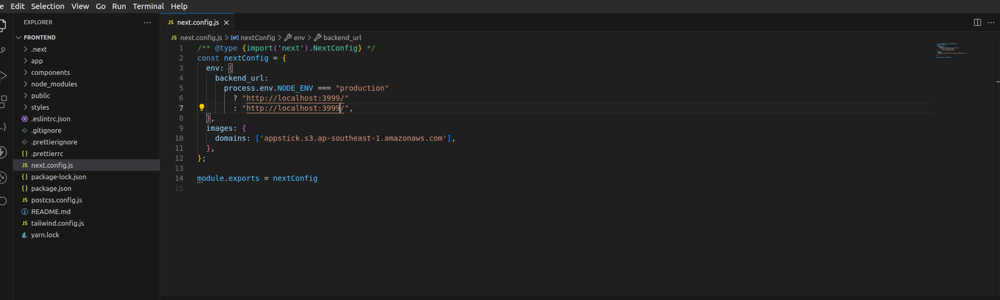

Installation Process
** Ensure your hosting server supports Node.js to proceed with the setup. **
-
Download the project as a zip file.
-
Extract the file. You will see two folders: 1. Source Code and 2. Documentation.
-
Inside Source code folder You will see two folders: 1. frontend and 2. backend.
-
Install Project Dependencies (Local Environment)
-
1. Install Node.js if it's not already installed:
-
2. Verify Node.js installation by checking its version:
node --version -
3. Install Yarn if it's not already installed:
npm i -g yarn -
4. Verify Yarn installation:
yarn --version -
5. Install TypeScript if required:
npm install -g typescript -
6. Start the Backend Server:
yarn (install dependencies)
yarn start (start server) -
7. Before starting the Frontend Server you need to configure the next.config.js file replace this url with you local backend url:
Example: http://localhost:3999/
 -
8. Start the Frontend Server:
yarn - Install dependencies
yarn build - Build the project
yarn start - Start the production server
Once the server is running, you can access the app at: http://localhost:3000
-
*** For any installation issues, please contact support. ***